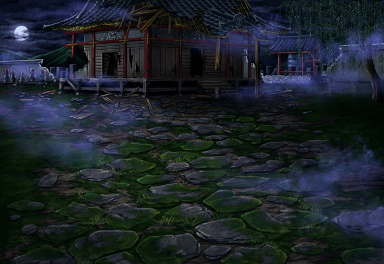

セリア
ここね、夜な夜な怪物が出るって 噂されている場所は。
カゲヌイ
殿とスズネ姫の命とはいえ、 お前らの助力を仰ぐことになるとはな……。
サクノシン
まあ、そう堅苦しく考えなくとも いいのではないですか。
サクノシン
姫様とゲンバ殿は 無事、和解したのですから、
サクノシン
カゲヌイ殿も、拙者たちと 親睦を深めようではありませんか！
カゲヌイ
お前がこの場に来るとは 聞いていないのだが……。
サクノシン
セリア師匠が行くのなら、 たとえ火の中！水の中！！
カゲヌイ
……………。 俺は独自でこの寺を探る……。
ティリス
うーん、もうちょっと仲良くできるかな って思ったんだけど……。
セリア
ああいうタイプは根が真面目そうだから、 うまく敵、味方の切り替えができないのよ。
サクノシン
カゲヌイ殿はゲンバ殿の直属のシノビで、 その名は知られていても、
サクノシン
城内の者が接する機会は、 ほとんどありませんからなあ。
サクノシン
何を隠そう、拙者もあの方とまともに 話すのは、さっきが初めてでしたから！
ティリス
なんか…… 雰囲気あるところだよね……。
セリア
ずっと気にしないように していたんだから！！
サクノシン
そ、そういえば、この寺にまつわる 怨霊の話を聞いたことがあります。
サクノシン
この寺には、ある奉公人の少女が 弔われているらしいのですが、
サクノシン
その少女というのは、主人の大切な香炉を 盗んだという疑いをかけられたらしいのです
サクノシン
その少女は無実を主張したのですが、 誰も信じる者はおらず、
サクノシン
周囲から責められて、 ついには自ら命を絶ってしまいました。
サクノシン
その後、問題の香炉が違う場所から発見され 少女の潔白が証明されたのですが、
サクノシン
濡れ衣を着せられて亡くなった彼女の魂は いまだに成仏できず、
サクノシン
ついには怨念となり、 この寺をさまよっている……とのことです。
ティリス
……さすがに出来過ぎな話で、 ちょっと嘘くさいかなぁ～…って思ったから
サクノシン
いや、嘘ではありませんよ！ ちゃんと街で聞いた話です。
サクノシン
そもそも、「夜な夜な怪物が出る」 という噂があったからこそ、
サクノシン
拙者たちは、 ここを訪れたんじゃないですか！
サクノシン
さらに聞いた話では、 少女の怨念は悪霊を吸収して巨大化。
セリア
ま、まさか…… ほ……本物の……亡……霊！？
ティリス
確かに不気味な容姿だけど、 実体はちゃんとあるみたいだし、
ティリス
ベクタスとかでよく見かけた 機械人形に近い感じだよ！
セリア
アンタが変な話をしたから、 勘違いしちゃったじゃないのよ！
セリア
クッ……そもそも私たちの目的は、 コイツの調査、討伐だったわね！
セリア
Shou-chan！ まさかアンタまで気絶してないわよね！？